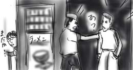
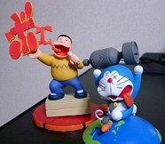

帰りが遅くなったので，ラーメン屋で晩飯を食べていた時の話です．
出入り口から顔をのぞかせたヤングに向かって，店員が何事か罵り始めました．
「ここはビデオ屋じゃねンだよ！」
「あ？」
「何車停めてンだ！ガキが！」
「どこにも停めるなって書いてねェだロ！？あ？」
「舐めてんじゃねぇぞ，コラ！クソガキが！」
厨房から一直線にエプロンが飛んだーーー！！！．それを合図に，出入り口まで駆け付けた店員とヤングの怒号合戦が開始．店内にバイオレンスなセリフがこだまし始めました．
僕はとっくに食べ終わっていたのですが，これでは出て行けません．いつまで耐えればいいのかなぁ．せめてどこか他でやって欲しい．そう思いながら，テーブルで成り行きを見守っていました．スープをレンゲでかき混ぜながら(手持ち無沙汰)．

もう来るもんか！
セブンイレブンで先行発売しているエポック社の「コミックテイストフィギュア ドラえもん」を買ってきました．わざわざ会社帰りに遠回りしてセブンイレブンに寄ったところ，またもや腐臭が漂っていました．モルドール強すぎ．
重くて中身が詰まってそうなものを選りすぐって2個購入したところ，「ジャイアン リサイタル(シークレット扱い)」と「地球破壊爆弾」が手に入りました．ドラえもんのフィギュアは青地に白を塗装するので，どうしても色ムラが出がちですが，ジャイアンの方はなかなかいい感じです．

まぁそれほどすごい出来！というわけでもないのですが，そのチョイスにかなり惹かれます．「未来の国からはるばると(ドラえもん登場)」のフィギュアでは，ちゃんとのび太が餅を食べてます(テレビ朝日は見習うべき)し，「初めてのタケコプター(ヘリトンボ)」のフィギュアでは，ちゃんとのび太はズボンだけです．
しかし，貴重な全６種類のチョイスの一つに「会社丸焼け記念」フィギュアを潜り込ませたようと思った人は本当に偉いですね．
今日は「指輪物語〜二つの塔」を見て来ました(あくまで「ロード・オブ・ザ・リング」とは言わない)．
世の中にこんなに面白い物があっていいのか！(大げさ)．前回「旅の仲間」は冒頭のホビット庄のシーンですでに涙が溢れた僕ですが，今回も前回からの引き，バルログともみ合いながら落ちて行くガンダルフのシーンですでに涙が！(早すぎ)．カットの向こうに中つ国の世界が，様々な種族が息吹いていることを感じさせる圧倒的な映像の作り込み，迫力に全編涙腺ゆるみっぱなし．エキストラとCGで演出される攻城戦も物凄かったです．フロドとサムが「物語」について言及するところは，ピーターの心意気と受け取りました．ぶわっ．
その後，4巻が出たのを機に，羽海野チカ『ハチミツとクローバー』(集英社Qeen's Comics)を全巻ドカ買い．横のレジに並んだ女性も同じく4冊ドカ買いしていたのでビビりました．シンクロ！
うわ，これムッチャおもしろいよ！ニタニタしながら電車のホームで『ハチミツとクローバー』(少女マムガ)を読みふける28歳男性．これじゃ不気田くん (c)犬木加奈子だよ．
そして帰りにコンビニに入ったら，腐臭が充満してて驚愕．モルドールの手がこんなところにまで！ずっと中に居るから店員は気付かないんだろうけど，マジやばかったです．何でこんなことに．
ここしばらく，日記も更新しないで何をやっていたかというと，話題のMacOSX用デスクトップアクセサリ実行環境「Konfabulator」で遊んでいました．
Konfabulatorでは，Widgetと呼ばれるデスクトップアクセサリをXMLとJavaScriptで簡単に作成することが出来ます．というわけで例を参考にちょっと作ってみたのが下(slashdot.jpのヘッドライナ)です．

日本語はSJISのみで表示可能なので，curlコマンドで取得したRSS(RDF Site Summary)データをUTF-8→SJIS変換してやる必要があります．変換処理はJcode.pmを使ったPerlスクリプトにして，Widgetの中から呼び出すようにしています．このように，継ぎはぎで楽に目的を達成できるのが最高にラブなところです．MacOSXを使っててよかったなぁ！
また何か思い付いたら作ろうと思います．
2003/2/20も同時更新です．